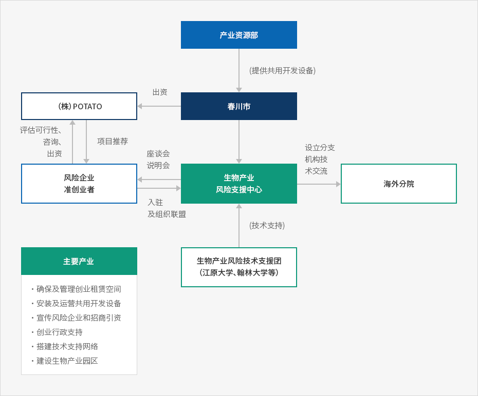
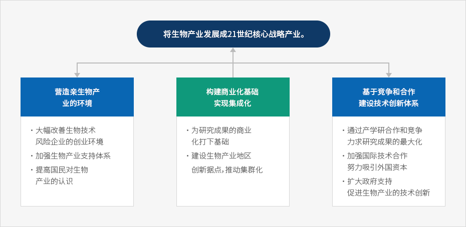
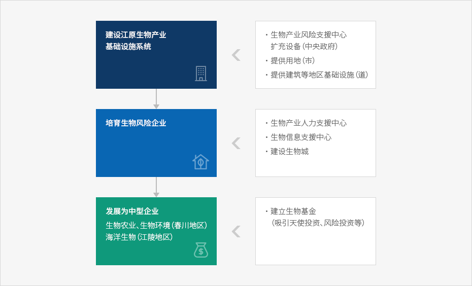

生物产业
- Home
- 主要产业
- 生物产业
生物产业的特性
生物产业 (bioindustry, biotechnology industry) 是指利用动物、 植物、 微生物等生物体具有的功能与信息，利用作为生物触媒的酶，商业化生产人类需要的各种有用物质的产业群。
生物产业大体可以分为利用遗传基因重组、细胞融合、蛋白质工程学、细胞培养、生物工程等生物工程学技术生产产品与制造过程上的工程。
生物工程学技术是指利用生物体的功能制造产品，或改变遗传结构利用固有特性的复合技术，在利用这种生物工程学技术的过程中，可以创造新产品或改良原有产品。
主要生物工程学技术概要
基础技术
| 具体技术名称 | 内容 |
|---|---|
| 遗传基因重组技术 | 这是一项在分子水平上操作遗传基因的技术，在生体外部试管中变换生命变换本体的遗传基因后，通过转运体把变换的遗传基因重新注入生体，寻找和制造新的有用物质 |
| 细胞融合技术 | 融合具有互不相同形质的两个以上细胞，制造成一个具有各细胞的有用特性的细胞 |
| 蛋白质工程学技术 | 是指变更具有氨基酸序列的蛋白质分子结构，开发特殊目的的蛋白质的技术，主要用于增强蛋白质稳定性及效能的领域 |
实用化技术
| 具体技术名称 | 内容 |
|---|---|
| 发酵技术 | 是历史悠久的生物产业，利用一定温度与湿度，在发酵池内培养微生物的技术 |
| 细胞培养 技术 |
|
| 生物工程技术 | 是指利用生物体系统生产有用物质的工程技术，包括生物反应工程学技术与分离精制技术 |
| 生物工程 | 是指使生物工程学技术实现实用化、产业化的复合系统工程学，包括利用生物学方法的工厂的设计及建设等 |
国内生物产业现况
1998 年生物产业内需为 5085 亿韩元， 1992 年以后，出现了年均 31.9% 的高增长率。
1998 年国内生物产业产值 8200 亿韩元，过去 5 年间年均增长率达到 50% 以上。
1998 年国内生物产业产值 8200 亿韩元，过去 5 年间年均增长率达到 50% 以上。
国内生物产业的需求现况
(单位 : 百万韩元)
| 类别 | 1992 | 1995 | 1996 | 1998 |
|---|---|---|---|---|
| 内需 | 96,543 | 251,611 | 328,462 | 508,500 |
| 出口 | 24,635 | 73,534 | 244,853 | 452,300 |
| 生产 | 82,749 | 238,786 | 468,145 | 819,800 |
| 进口 | 38,429 | 86,359 | 105,170 | 141,000 |
※ 资料 : 韩国生物产业协会, [各年度国内生物产业实态调查] 各年号
今后生物产业内需得力于相关产业扩大与企业的积极投资，预计 1997~2005 年间将以年均 34.5% 的速度增加， 2006~2010 年间，将以年均 21.7% 的迅速增长。
在生物产业相关市场规模增大的同时，国内市场规模预计在 2010 年达到世界市场的 5% 以上。
出口方面， 2005 年为 28 亿美元，预计 2010 年将达到 79 亿美元， 1997~2005 增长率为 33.8%, 2006~2010 年间年均增长率预计达到 22.6% 。进口方面， 1997~2005 增长率为 39.9%, 2006~2010 年间预计年均增长 21.0% 。
国内生物产业供求展望
(单位 : 亿韩元，百万美元)
| 类别 | 1997 | 1998 | 2000 | 2003 | 2005 | 2010 |
|---|---|---|---|---|---|---|
| 内需 | 4,246 | 5,085 | 11,000 | 25,000 | 45,400 | 121,200 |
| 出口 | 278 | 300 | 700 | 1,600 | 2,860 | 7,920 |
| 生产 | 5,879 | 8,198 | 14,000 | 32,000 | 56,200 | 155,600 |
| 进口 | 120 | 168 | 400 | 900 | 1,760 | 4,560 |
年均增长率
(单位 : %)
| 类别 | 1997 ~ 2005 | 2006 ~ 2010 |
|---|---|---|
| 内需 | 34.5 | 21.7 |
| 出口 | 33.8 | 22.6 |
| 生产 | 32.6 | 22.6 |
| 进口 | 39.9 | 21.0 |
※ 资料 : 产业研究院， [ 生物医药产业的发展战略 ], 1999
※ 注 : 出口、进口按美元计算
※ 注 : 出口、进口按美元计算
1998 年，生物产业国内市场规模为 5,085 亿韩元，从领域来看，生物医药最大，占 56.4%,生物工程占 12.5%,生物化学占 9.2%,生物农业占 8.5%,生物食品占 7.2%,生物环境占 6.2% 。
出口方面，生物化学得力于赖氨酸等氨基酸系的出口增加，显示出 46.7% 的较高比重，其后是生物医药 (38.6%)、生物食品 (11.9%) 。
预计今后国内生物产业市场将与世界市场变化类似，以生物医药为中心，保持高增长势头。 预计生物医药市场在 1999~2010 年间将出现年均 25.1% 的增长率，在国内生物产业中占据的比重从 56.4%(1998 年) 降低到 50.0%(2010 年) 。
生物产业各部分的内需及出口现况(1998)
(单位 : 百万韩元, %)
| 类别 | 内需 | 出口 |
|---|---|---|
| 生物医药 | 286,626 (56.4) | 185,962 (38.6) |
| 生物农业 | 43,300 (8.5) | 11,064 (2.3) |
| 生物食品 | 36,535 (7.2) | 57,197 (11.9) |
| 生物环境 | 31,783 (6.2) | 50 (0.0) |
| 生物化学 | 46,863 (9.2) | 224,847 (46.7) |
| 生物工程 | 63,404 (12.5) | 2,374 (0.5) |
| 合计 | 508,511 (100.0) | 481,494 (100.0) |
※ 资料 : 韩国生物产业协会
到 2010 年，生物农业及生物食品领域在生物产业中所占比重预计将从 1998 年的 8.5% 与 7.2% 提高到 9.8% 与 9.3% 。因此，这两个部门将出现占国内生物产业比重 19.1% 左右的高增长势头。
生物产业各部门的国内市场展望
(单位 : 亿韩元, %)
| 类别 | 1998 | 2000 | 2003 | 2005 | 2010 | 年均增长率 (1999~2010) |
|---|---|---|---|---|---|---|
| 生物医药 | 2,866 (56.4) |
6,050 | 13,750 | 22,700 | 60,600 (50.0) |
25.1 |
| 生物农业 | 433 (8.5) |
946 | 2,150 | 4,449 | 11,878 (9.8) |
25.8 |
| 生物食品 | 365 (7.1) |
891 | 2,025 | 4,222 | 11,272 (9.3) |
26.3 |
| 生物化学 | 469 (9.2) |
1,111 | 2,525 | 5,085 | 13,574 (11.2) |
22.8 |
| 生物环境 | 318 (6.2) |
715 | 1,625 | 3,269 | 8,726 (7.2) |
29.1 |
| 生物工程 | 634 (12.5) |
1,287 | 2,925 | 5,675 | 15,150 (12.5) |
24.5 |
| 计 | 5,085 (100.0) |
11,000 | 25,000 | 45,400 | 121,200 (100.0) |
25.3 |
※ 资料 : 韩国生物产业协会，产业研究院
江原圈的生物产业培育现况
以春川为主，江原道除一部分公团指定地区外的大部分被指定为水源保护区域，在地理条件上，工厂腹地狭小，因此，在制造业工厂选址条件方面不如其它地区。因此，作为可入驻的行业，春川市从地区开发角度，优先吸引既是无公害产业又是高 研发 比重的生物产业。
春川生物产业风险企业支援中心运营
春川通过 1999 年下半年竣工的 “生物产业风险企业支援中心”,构建培育生物产业所需的基础条件。
在生物产业领域中，把农业生物工程学、环境生物、医药工程学、银生物工程学等指定为重点研究对象领域，发掘和支援符合地区特性的行业及企事业项目，推进风险企业自力更生能力基础。
春川生物产业风险企业支援中心现况
| 类别 | 内容 |
|---|---|
| 规模 |
|
| 主要设施 |
|
| 主要功能 |
|
| 入驻 对象 企业 |
|
※ 资料 : 春川市
春川市把多媒体·影像产业、生物产业等选定为未来产业，设立市长直接领导的 “知识文化产业局”,构建并运营培育符合地区条件的产业所需的体制。
江原道春川市的生物产业推进体系



※ 资料 : 春川市
中央政府的生物产业培育方案
从生物产业相关各政府部门的投资规模来看， 1999 年共计支援 1608 亿韩元，科学技术部 994 亿韩元、农林部 280 亿韩元、产业资源部 217 亿韩元。其中， 研发 部门 1450 亿韩元、基础设施等设备支援部门 158 亿韩元。
产业资源部鉴于基础设施不足的国内情况，计划扩充风险支援中心、安全性评估中心等基础部门。
生物产业相关部门的投资规模(1999)
(单位 : 亿韩元)
| 科技部 | 教育部 | 农林部 | 产资部 | 福利部 | 环境部 | 海洋部 | 计 | |
|---|---|---|---|---|---|---|---|---|
| 研发 | 772 | 186 | 268 | 133 | 28 | 28 | 35 | 1,450 |
| 基础设施 | 22 | - | 12 | 84 | 19 | 18 | 3 | 158 |
| 计 | 794 | 186 | 280 | 217 | 47 | 46 | 38 | 1,608 |
2000 年 2 月，产业资源部为把生物产业培育成国家支柱产业，制定了 “生物产业发展综合对策”,并制定了详细的实施计划。
产业资源部预计，与信息通信技术 (IT) 融合的生物技术 (BT) 今后将成为 21 世纪的核心技术，预计扩大对构建生物产业基础的投资。
选定了如下推进课题： ① 营造可供生物产业成长的环境， ② 构建促进产业化的基础并实现集群化， ③ 确立基于竞争与合作的技术创新体系。包括制定相关法案在内，各商品交易会的详细事业计划正在制定当中。
特别是作为生物产业培育示范事例，包括对春川生物产业风险支援中心的支援方案在内，从道政府的角度树立追加支援方案时，成长为可以在生物农业及生物环境部门代表江原道的产业的可能性非常高。
营造生物产业成长环境
营造生物风险企业创业条件
- 通过设立由政府、创业投资公司、生物产业界支援的生物产业专业投资组合，形成生物产业支援专门基金，此外，引导形成由民间主导的生物产业专门投资组合。
- 扩大专门审查生物风险企业的评估人才，召开生物风险创业说明会，设立创业支援流动服务站，改善税制支援相关制度，以此营造出生物风险创业的火热气氛。
强化生物产业支援体制
- 为确立从制度上支援生物产业发展所需的支援体制，推进 “建立生物产业发展基础相关法律 (暂称)” 的制定。
- 为支援生物产业发展，在产业基础技术开发事业中新设 “生物产业技术开发” 的项目。
- 与科学技术部 (基础研究开发)、产业资源部 (实用化应用技术、基础设施建设) 及农林部、保健福祉部、教育部、海洋水产部、环境部等构建泛政府层次上的高效支援体制
提高国民对生物产业的理解
- 制定 “Bioindustry Award”,实现对国内生物产业界、研究所、支援机构等生物技术研究开发及产业实地的宣传事业
- 召开生物产业展览会，开发网上教程，结成构建政府与民间有机协作体制所需的 BIO 社会民间推进协会。
构成产业化促进基础并实现集群化
构建促进研究成果产业所需的基础
- 按计划推进化学研究所稳定性中心设施扩充事业，按计划推进目前进行中的仁川松岛技术园的生物产业技术实用化中心设立工作。
- 构建和利用产·学·研研究人才网络，使专业人才的利用实现最大化，设立遗传基因研究所、 蛋白质组学 研究所等，确保遗传基因解释及生物信息处理能力，应对 Post Genome 时代。
构建生物产业地区创新据点并实现集群化
- 通过地区内大学、研究所、业界、地方自治团体间的有机合作，集中培育按地区优化的生物产业。
- 推进按地区设立的生物产业创新据点的网络化及技术信息交流、共同研究等合作事业。
确立基于竞争与合作的技术创新体制
通过“产·学·研·官”的竞争与合作，实现研究成果最大化
- 搞活原有生物产业体与中小·风险企业间的合作，构建关于生物产业体、大学、研究所保有的生物研究设备的网络系统。
- 通过相关部门间事前协商，审核重复性及开发主体间联系可能性，实现技术开发支援成果最大化。
搞活国际技术合作，努力吸引外资
- 扩大与美国·日本等生物产业发达国家的国际合作事业，搞活技术合作，用作吸引外资的机会。
- 对于国内开发困难的技术果断与海外研究机构共同研究，摆脱技术性国粹主义，有效应对生物产业相关国际条约。
扩大生物产业技术创新所需的政府支援
- 政府 研发 预算中的生物产业支援比重每年增加 1%,到 2005 年，从 1999 年的 5.4% 扩大到 10% 以上。
- 树立把技术开发领域分为短期·中期据点、下一代推进的 “生物产业技术开发 5 年计划 (2001~2005)” 。
生物产业发展促进战略

将生物产业发展成21世纪核心战略产业。
-
营造亲生物产业的环境
- 大幅改善生物技术风险企业的创业环境
- 加强生物产业支持体系
- 提高国民对生物产业的认识
-
构建商业化基础，实现集成化
- 为研究成果的商业化打下基础
- 建设生物产业地区创新据点，推动集群化
-
基于竞争和合作，建设技术创新体系
- 通过产学研合作和竞争，力求研究成果的最大化
- 加强国际技术合作，努力吸引外国资本
- 扩大政府支持，促进生物产业的技术创新

※ 资料 : 产业资源部
另外，地方自治团体也树立并推进了生物产业相关培育计划，制定了地方自治团体各具物色的差别化战略。
培育生物产业所需功能
产·学研究合作
- 对于生物产业而言，拥有特定技术力是竞争力的源泉，需要能够衔接大学的研究开发能力与企业的事业化功能的研究合作功能。
- 特别是生物产业基础薄弱的地区，通过构建把大学教授等专业人才与研究开发支援事业和相关企业的事业化技术相衔接进行支援的系统，搞活地区内生物产业。
高级人才培养及再教育
生物产业为了拥有可持续的研究力量，确保高级研究人才和再教育系统是必不可少的。设立评估认证机构
- 为使国内生物产业相关产品进入美国等海外发达国家市场，运营安全性认证机构非常紧要。
- 特别是江原地区，需要推进设立生物农业及生物环境等特化部门的评估认证机构。
建立生物产业园区
- 提供可将已由春川市推进的生物产业风险支援中心培养的企业可以转移到地区内生物产业园区并可生产、制造的地理空间。
- 江原生物产业园区试图营造生物风险企业可成长为制造业的条件，通过扩散江原生物产业，谋求搞活地区经济。
支援搞活生物风险企业创业
构建实验室创业、分离创业等大学及企业可以培养生物风险企业的创业保育功能与生物产业相关一体行政服务体制江原生物产业培育战略
江原地区生物产业培育战略是使已经运营中的春川生物产业风险支援中心具备生物产业综合支援功能，扩充人力支援、信息支援等综合性支援系统，追加营建生物城 (园区) 等。
使从生物产业风险支援中心出来的企业可以具备公寓型工厂等中小规模生产设备，具备制造能力，今后把规模扩大为生物产业园区，把生物产业培育成江原道的支柱产业。
春川市在国内率先设立生物产业风险支援中心后，大田、仁川等各广域自治团体也纷纷制定生物产业支援方案。
为此，在江原道层次上把生物产业扩大到春川圈域，今后，为提高对江原全地区的协商效果，需要与春川市构建行政支援协助系统。
根据 1999 年江原地区产业振兴计划，构建生物产业集群化园区 (生物城),扩充人力支援方案、支援中心内设备，相互完善运营市与道间紧密的行政系统。
长期而言，效仿春川市的行政支援系统，在附近市、郡等地方自治团体间构建吸收及发展新产业所需的高效的行政网络。

-
建设江原生物产业基础设施系统
- 生物产业风险支援中心扩充设备（中央政府）
- 提供用地（市）
- 提供建筑等地区基础设施（道）
-
培育生物风险企业
- 生物产业人力支援中心
- 生物信息支援中心
- 建设生物城
-
发展为中型企业，生物农业、生物环境（春川地区）、海洋生物（江陵地区）
- 建立生物基金（吸引天使投资、风险投资等）